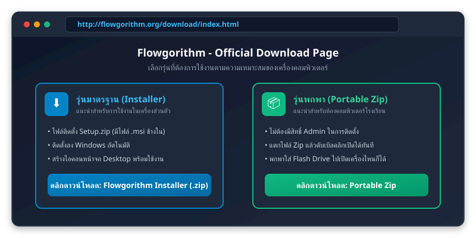
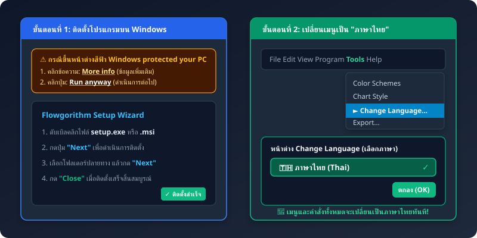
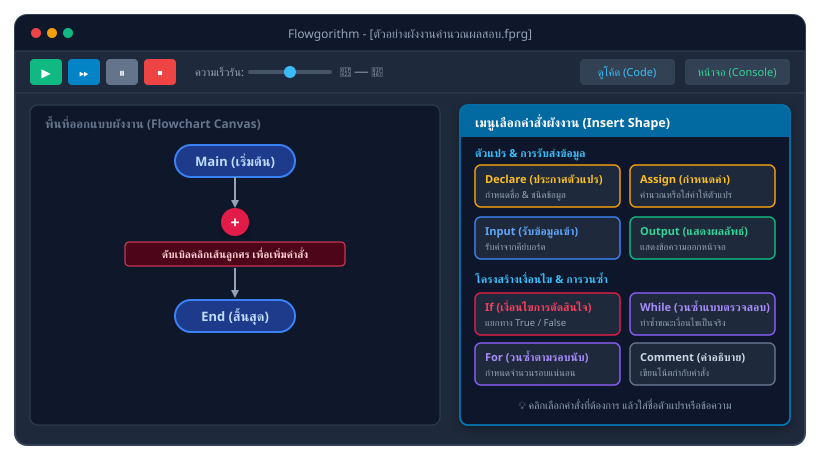
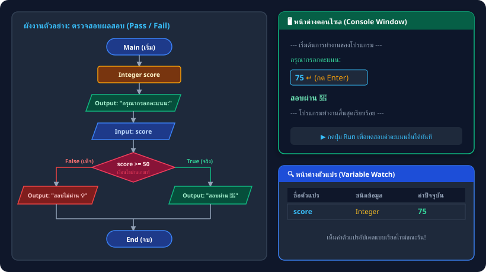
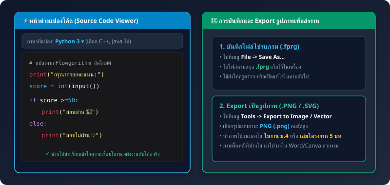

คู่มือการดาวน์โหลด ติดตั้ง และฝึกเขียนผังงานด้วย Flowgorithm
โปรแกรม Flowgorithm คือเครื่องมือเขียนและจำลองการทำงานของผังงาน (Interactive Flowchart Execution) ที่พัฒนาขึ้นสำหรับการเรียนการสอนด้านวิทยาการคำนวณโดยเฉพาะ จุดเด่นสำคัญคือนักเรียนสามารถ กดปุ่มรันเพื่อดูขั้นตอนการทำงานจริง ของผังงานได้ทันที ดูการไหลของข้อมูล การทำงานของตัวแปรในหน่วยความจำ และสามารถแปลงผังงานเป็นโค้ดภาษาคอมพิวเตอร์ยอดนิยม เช่น Python, C++, Java ได้ในคลิกเดียว
- เพื่อฝึกให้นักเรียนถ่ายทอดขั้นตอนวิธี (Algorithm) ออกมาเป็นผังงานมาตรฐาน ANSI ได้อย่างถูกต้อง
- เพื่อให้นักเรียนสามารถตรวจสอบหาข้อผิดพลาด (Debugging) ของขั้นตอนวิธีก่อนลงมือเขียนโปรแกรมจริง
- เพื่อบันทึกและ Export รูปภาพผังงานคุณภาพสูงนำไปประกอบในใบงานและเล่มรายงานโครงงาน 5 บท
1 ขั้นตอนการดาวน์โหลดโปรแกรม (Download Guide)
โปรแกรม Flowgorithm เป็นซอฟต์แวร์ฟรีสำหรับการศึกษา (Freeware) ให้นักเรียนเข้าไปที่เว็บไซต์ทางการ:
http://flowgorithm.org/download/index.html

💡 เลือกรุ่นไหนดีระหว่าง Installer กับ Portable?
| รุ่นของโปรแกรม | คุณสมบัติเด่น | คำแนะนำการใช้งาน |
|---|---|---|
| 1. Installer (.zip / .msi) | ติดตั้งลงระบบ Windows แบบสมบูรณ์ สร้างไอคอนบน Desktop และผูกไฟล์นามสกุล .fprg อัตโนมัติ | เหมาะสำหรับคอมพิวเตอร์ส่วนตัว / โน้ตบุ๊กของนักเรียนที่บ้าน |
| 2. Portable Zip | ไม่ต้องกดติดตั้ง ไม่ต้องใช้สิทธิ์แอดมิน แตกไฟล์โฟลเดอร์ออกมาแล้วเปิดใช้งานได้ทันที | เหมาะสำหรับเครื่องคอมพิวเตอร์ในห้องปฏิบัติการโรงเรียน หรือใส่ Flash Drive |
2 การติดตั้งและตั้งค่าเมนูภาษาไทย (Installation & Setup)

เนื่องจากเป็นโปรแกรมดาวน์โหลดจากอินเทอร์เน็ต ระบบความปลอดภัยของ Windows อาจแจ้งเตือน ให้แก้ไขง่ายๆ ดังนี้:
1. คลิกที่ข้อความ More info (ข้อมูลเพิ่มเติม)
2. จากนั้นจะมีปุ่ม Run anyway ปรากฏขึ้นมา ให้กดคลิกเพื่อดำเนินการต่อได้ทันที
🇹🇭 ขั้นตอนการเปลี่ยนเป็น "ภาษาไทย"
- เปิดโปรแกรม Flowgorithm ขึ้นมา
- ที่แถบเมนูด้านบน เลือกเมนู Tools (เครื่องมือ)
- คลิกเลือกคำสั่ง Change Language... (เปลี่ยนภาษา)
- เลือก ภาษาไทย (Thai) จากนั้นกดปุ่ม OK (ตกลง)
- เมนูทั้งหมดจะเปลี่ยนเป็นภาษาไทยทันที ใช้งานง่ายและเป็นมิตรกับผู้เรียน
3 หน้าต่างการทำงานและเมนูคำสั่งหลัก (Interface Overview)
เมื่อเปิดโปรแกรมขึ้นมา จะพบกับหน้าต่างการทำงานหลักที่มีผังงานเริ่มต้น Main และ End ให้นักเรียนดับเบิลคลิกที่เส้นลูกศรเชื่อมต่อ เพื่อเปิดเมนูเลือกคำสั่งผังงาน (Insert Shape Palette) ดังนี้:

📌 สรุปสัญลักษณ์และคำสั่งสำคัญที่ใช้ใน ม.4
| คำสั่งใน Flowgorithm | สัญลักษณ์ ANSI | หน้าที่และการนำไปใช้งาน |
|---|---|---|
| Declare (ประกาศตัวแปร) | สี่เหลี่ยมผืนผ้า (สีส้ม) | ใช้จองพื้นที่หน่วยความจำและกำหนดชื่อตัวแปร เช่น score, totalPrice พร้อมระบุชนิดข้อมูล (Integer, Real, String, Boolean) |
| Input (รับข้อมูลเข้า) | สี่เหลี่ยมด้านขนาน (สีฟ้า) | ใช้รับค่าจากผู้ใช้ผ่านแป้นพิมพ์ เพื่อนำไปเก็บไว้ในตัวแปรที่ประกาศไว้ เช่น รับค่าคะแนน score |
| Output (แสดงผลลัพธ์) | สี่เหลี่ยมด้านขนาน (สีเขียว) | ใช้พิมพ์ข้อความหรือค่าของตัวแปรออกทางหน้าจอ เช่น "ยินดีด้วย คุณสอบผ่าน" |
| Assign (กำหนดค่า) | สี่เหลี่ยมผืนผ้า (สีส้ม) | ใช้คำนวณทางคณิตศาสตร์หรือนำค่าไปใส่ในตัวแปร เช่น sum = num1 + num2 หรือ area = width * length |
| If (การตัดสินใจ/เงื่อนไข) | สี่เหลี่ยมขนมเปียกปูน (สีแดง) | ตรวจสอบเงื่อนไขความจริง แยกการทำงานเป็น 2 ทาง คือ จริง (True) และ เท็จ (False) เช่น score >= 50 |
| While / For (การวนซ้ำ) | รูปหกเหลี่ยม (สีม่วง) | ใช้สร้างลูปเพื่อทำงานคำสั่งเดิมซ้ำๆ จนกว่าเงื่อนไขจะสิ้นสุดลง |
4 ตัวอย่างการเขียนผังงานและทดสอบรันผลจริง (Hands-on Tutorial)
เพื่อให้นักเรียนเข้าใจเห็นภาพจริง มาดูตัวอย่าง "โปรแกรมตรวจสอบผลสอบ (Pass / Fail)" ซึ่งรับคะแนนจากผู้ใช้และตรวจสอบว่าผ่านเกณฑ์ 50 คะแนนหรือไม่:

📝 ลำดับขั้นตอนการสร้างผังงานตัวอย่าง:
- ดับเบิลคลิกเส้นลูกศรใต้ Main เลือกคำสั่ง Declare พิมพ์ชื่อตัวแปรว่า
scoreและเลือก Type เป็น Integer (จำนวนเต็ม) - เพิ่มคำสั่ง Output พิมพ์ข้อความว่า
"กรุณากรอกคะแนน:"(หมายเหตุ: ข้อความต้องอยู่ในเครื่องหมายคำพูดเสมอ) - เพิ่มคำสั่ง Input พิมพ์ชื่อตัวแปรที่รับค่าคือ
score - เพิ่มคำสั่ง If พิมพ์เงื่อนไขว่า
score >= 50 - ในฝั่ง True (จริง): เพิ่มคำสั่ง Output พิมพ์ข้อความว่า
"สอบผ่าน 🎉" - ในฝั่ง False (เท็จ): เพิ่มคำสั่ง Output พิมพ์ข้อความว่า
"สอบไม่ผ่าน 💡" - คลิกปุ่มสีเขียว ▶ Run หรือกดปุ่ม F5 เพื่อเริ่มรันโปรแกรม
- หน้าต่าง Console Window จะเปิดขึ้นมา ให้นักเรียนพิมพ์ตัวเลขคะแนน เช่น
75แล้วกด Enter จะเห็นผลลัพธ์แสดง"สอบผ่าน 🎉"ทันที!
5 การแปลงผังงานเป็นโค้ดคอมพิวเตอร์และการ Export ส่งงาน

📸 วิธี Export ผังงานเป็นรูปภาพเพื่อนำไปใส่ใบงาน / เล่มโครงงาน:
- เมื่อเขียนผังงานเสร็จสมบูรณ์ ให้ไปที่เมนู Tools (เครื่องมือ)
- เลือกคำสั่ง Export to Image File... (ส่งออกเป็นไฟล์รูปภาพ) หรือ Export to Vector...
- เลือกฟอร์แมตเป็น PNG Image (.png) เพื่อให้ได้ภาพคมชัดสูงและพื้นหลังโปร่งใส
- กดปุ่ม Save เลือกที่บันทึกในเครื่อง จะได้ไฟล์รูปภาพผังงานสวยงาม
- นำภาพที่ได้ไปแทรกลงในไฟล์ Microsoft Word, Canva, หรือ Google Docs ของโครงงาน 5 บทได้ทันที
💾 วิธีบันทึกไฟล์ผังงานต้นฉบับ (.fprg):
ไปที่เมนู File -> Save As... ตั้งชื่อไฟล์ เช่น นายสมชาย_ใบงาน1.fprg เพื่อเก็บไฟล์ต้นฉบับไว้เปิดแก้ไขในครั้งต่อไป หรือใช้แนบส่งงานผ่านระบบออนไลน์
6 ข้อผิดพลาดที่พบบ่อยและวิธีแก้ไข (Troubleshooting & FAQ)
วิธีแก้ไข: ในโปรแกรม Flowgorithm ข้อความตัวหนังสือ (Text String) จะต้องอยู่ภายในเครื่องหมายคำพูดคู่ "..." เสมอ เช่น "สวัสดีครับ" หรือ "กรุณากรอกข้อมูล" หากไม่ใส่เครื่องหมายคำพูด โปรแกรมจะเข้าใจผิดคิดว่าเป็นชื่อตัวแปร
วิธีแก้ไข: ให้ใช้เครื่องหมาย & ในการเชื่อมข้อความกับตัวแปร เช่น "คะแนนรวมของคุณคือ: " & score & " คะแนน"
วิธีแก้ไข: ควรตั้งชื่อด้วยตัวอักษรภาษาอังกฤษ ไม่เว้นวรรค (ห้ามใช้ Spacebar) และไม่ขึ้นต้นด้วยตัวเลข เช่น totalScore, userAge, num1
วิธีแก้ไข: โปรแกรม Flowgorithm ออกแบบมาสำหรับระบบ Windows เป็นหลัก สำหรับนักเรียนที่ใช้ macOS สามารถรันผ่านโปรแกรมช่วย เช่น Wine หรือ CrossOver สำหรับ iPad แนะนำให้ใช้งานในห้องคอมพิวเตอร์โรงเรียน หรือเขียนผังงานผ่านเว็บเครื่องมือทดแทน เช่น Draw.io เมื่ออยู่นอกห้องเรียนครับ
พร้อมลงมือฝึกเขียนผังงานแล้วหรือยัง?
ดาวน์โหลดโปรแกรมและเริ่มต้นฝึกออกแบบขั้นตอนวิธีเพื่อเตรียมความพร้อมสู่การพัฒนาโครงงานคอมพิวเตอร์ระดับมืออาชีพ